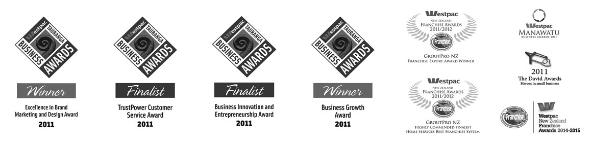

Welcome to the ProGroup, New Zealand’s award winning and premier home service franchise group. The ProGroup’s aim is to provide New Zealand home owners specialised and professional home services, performed by fully trained and qualified franchise business owners.
OUR AWARDS
2011/12 Westpac New Zealand Franchise Awards
Franchise Export Award’ – WINNER
2011/12 Westpac New Zealand Franchise Awards
‘Home Services Best Franchise System’ – HIGHLY COMMENDED
2011 Westpac Bay of Plenty Business Awards
‘Excellence in Brand Marketing & Design’ – WINNER
2011 Westpac Bay of Plenty Business Awards
‘Business Growth & Development’ – WINNER
2011 Westpac Bay of Plenty Business Awards
‘Excellence in Customer Service’ – FINALIST
2011 Westpac Bay of Plenty Business Awards
‘Business Innovation & Entrepreneurship’ – FINALIST
Westpac Manawatu Business Awards
‘ Professional Service Award’ – WINNER
Westpac Manawatu Business Awards
‘ Micro Business Award’ – WINNER
Westpac Manawatu Business Awards
‘ Innovation Award’ – HIGHLY COMMENDED
Westpac Manawatu Business Awards
‘ Supreme Business’ – FINALIST
2011 David Awards, Heroes in Small Business
‘SUPREME BUSINESS’ – WINNER
2011 David Awards, Heroes in Small Business
‘Most Outstanding Transitional Business’ – WINNER
2011 David Awards, Heroes in Small Business
‘Most Outstanding Lifestyle Business’ – WINNER
2011 David Awards, Heroes in Small Business
‘Most Inspired Use of Technology’ – FINALIST
2011 Ernst & Young New Zealand
Entrepreneur of the Year – FINALIST
2014/15 Franchise Association of NZ Home Services
Best Franchise System Finalist
